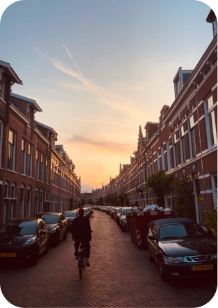
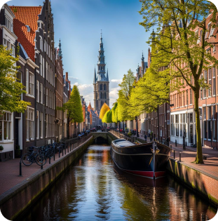
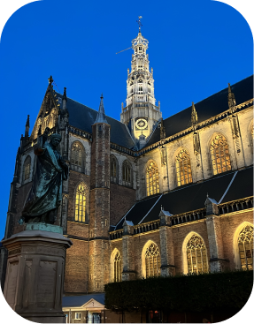

Several steps and considerations should be taken before moving to Haarlem as either a student or worker, to guarantee a flawless transition and enhance the full experience of this quaint Dutch city. Not too far from Amsterdam, Haarlem's beautiful canals, historical significance, and lively cultural environment are all attractive features. Take note of the following advice to prepare for your upcoming move :
1.Visa and Legal Requirements:
Haarlem may need you to obtain a specific visa or work/study permit to stay legally in the location. It is vital to make sure you have the appropriate documentation, as facing serious consequences is possible otherwise.
2.Accommodation:
Securing housing in Haarlem is a top priority when planning your move. It can be challenging to find accommodation, so it's important to start your search well in advance. Complications and stress can arise if you don't have a place to stay.
3.Finances:
For efficient management of your finances in Haarlem, you must create a budget and open a Dutch bank account. Getting accustomed to the cost of living is important, as is having access to local banking services, which are both crucial for your daily life.
4.Healthcare and Insurance:
Having knowledge regarding the Dutch healthcare system is crucial to maintain a healthy well-being. A vital part of this knowledge is ensuring that you have the proper health insurance coverage.
5.Cultural Awareness:
Learn about the cultural norms and practises of the Netherlands. You can more easily handle social situations and fit in with the community if you have this information.